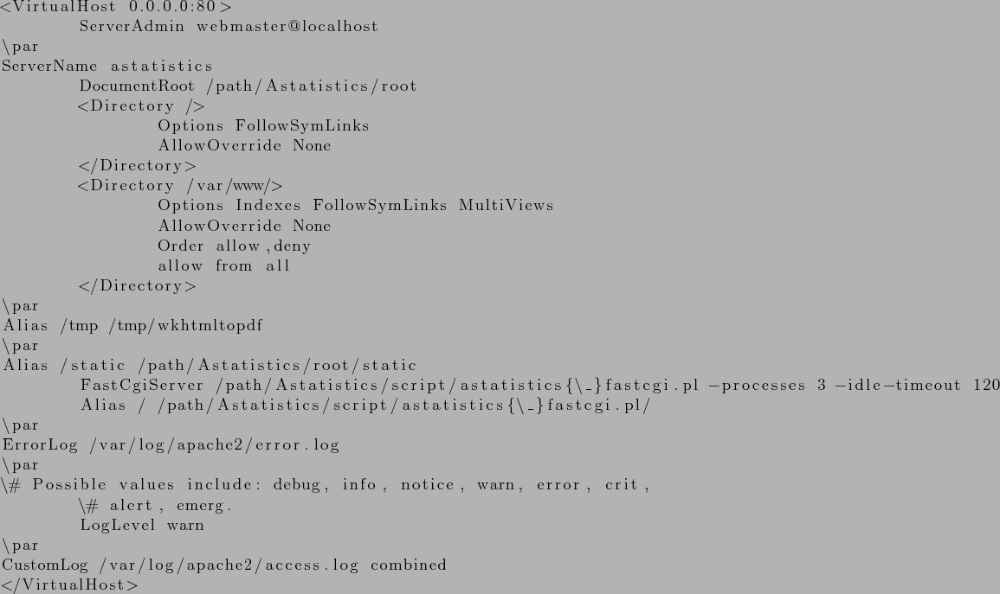
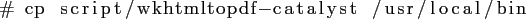

Next: Astatistics: Administración de usuarios Up: Instalación de Astatistics (Administrador Previous: Instalando requisitos de módulos Contents
Para un entorno en producción recomendamos utilizar el servidor Apache con FastCGI que tiene un comportamiento mejor y más rápido. A continuación detallamos los pasos a realizar para configurar Astatistics de esta forma:
Añadir un vhost con la siguiente configuración en Apache2 (consultar documentación):

La palabra /path habrá de ser sustituida por la ruta donde se habrá ubicado el árbol principal de Astatistics, por ejemplo /usr/local/astatistics.
En el listado anterior se ha utilizado el nombre de vhost ``astatistics'', por lo que deberemos apuntar nuestro navegador hacia dicho nombre para accederlo. Podemos configurar nuestro DNS incluyendo el nombre escogido o, para acceder desde nuestro sistema local, añadir ``astatistics'' al fichero /etc/hosts con nuestra IP local o de loopback (127.0.0.1 en la mayorÃa de los casos).
Asegúrese de que el directorio que contiene la base de datos de astatistics (SQLite) y el fichero de dicha base de datos (astatistics.db) son accesibles y tienen permiso de escritura por el usuario utilizado por el servidor web (en Debian www-data). En el ejemplo siguiente se hace dando permiso de escritura para el grupo www-data:

Para permitir que se ejecute correctamente la exportación a PDF, el paquete wkhtmltopdf ha de ejecturarse desde un servidor X. Para ello hemos añadido un wrapper denominado wkhtmltopdf-catalyst en el directorio script/ que deberÃa de ser copiado a /usr/local/bin:

Dicho script utiliza el binario xvfb-run, por lo que dicho ejecutable deberÃa de estar instalado en el sistema. En debian esto se consigue instalando el paquete xvfb.
Tras reiniciar el servidor Apache con ``/etc/init.d/apache2 restart'' el sistema Astatistics deberÃa de ser accesible correctamente, en nuestro ejemplo apuntando el navegador a la dirección ``http://astatistics''.
Para propagar la configuración de nuestra base de datos de Asterisk y hacerla utilizable por Astatistics se habrá de ajustar y luego ejecutar el script ``script/create_asterisk_model.sh''.
Según la instalación también podrÃa ser necesario regenerar el modelo de la base de datos SQLite de Astatistics revisando y ejecutando el script ``script/create_model.sh''.
Tras estos pasos ya se podrá acceder y probar el sistema Astatistics.
Eduardo García-Mádico Portabella 2013-09-09